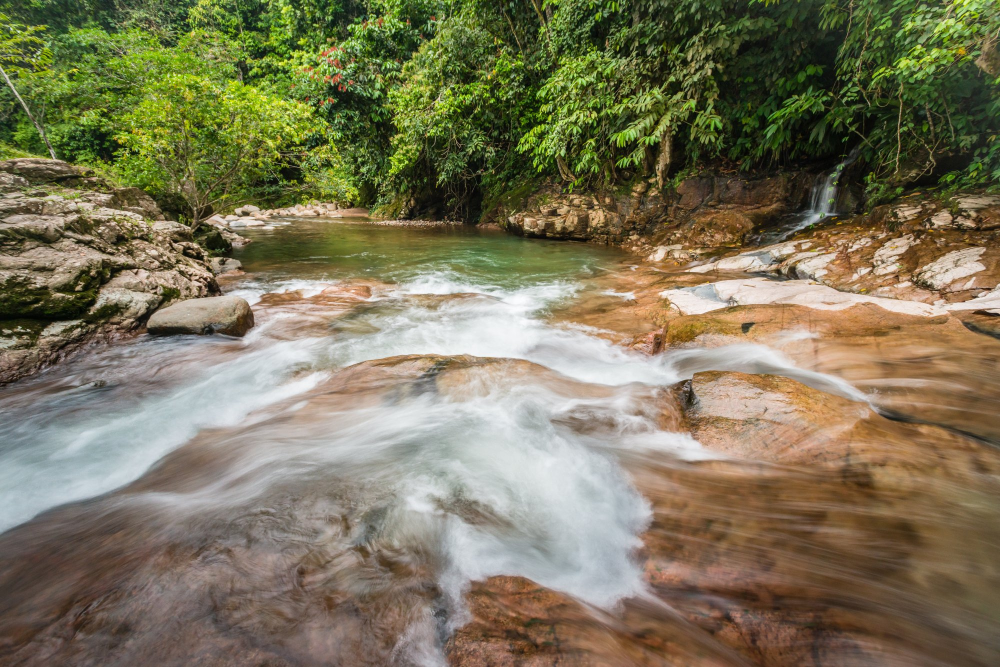
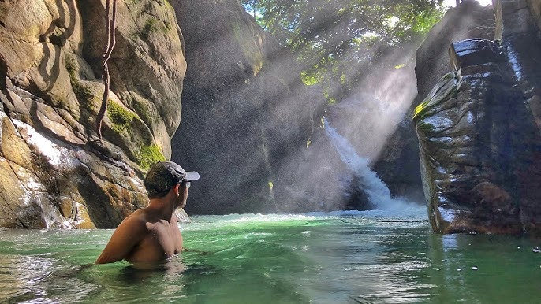
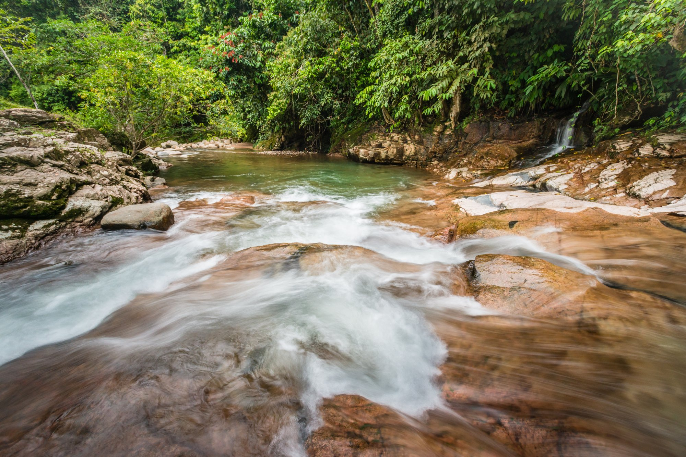
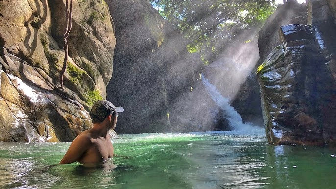

Balneario Las Pailas
 



El Balneario Las Pailas es un rincón paradisíaco donde la naturaleza y la recreación se unen. Con sus aguas frescas y cristalinas, este balneario es ideal para disfrutar de un día de sol y diversión en familia o con amigos. Rodeado de una vegetación exuberante, ofrece espacios para el descanso y la aventura, como senderos y áreas para hacer picnic. Las Pailas es un lugar perfecto para desconectar y disfrutar de la belleza del entorno natural.